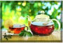

Sign up for a sample
Our tea is the best!
Unmatched since 1983. Which type of tea you drink can make a difference. All non-herbal teas are made from the leaves of the Camellia sinensis plant. The amount of time the leaves are processed determines whether you end up with a green, black or oolong tea.
Tea sets
Variety of options for you to choose from. Visit our store to know more.
Tea Varieties
We serve awide variety of teas from green to oolong, all handpicked from the best gardens and absolutely free of pesticides.
Tea tasting

Sign up for our weekly tea tasing event. View photos of previos events and hear what real customers had to say about their experience.